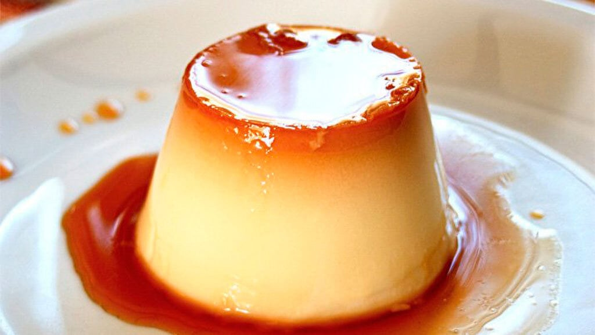

Flan
El flan es un postre elaborado con una natilla teniendo como ingredientes principales huevos enteros, leche y azúcar que luego es refrigerado para obtener una textura cremosa y gelatinosa.
Arroz con Leche

El arroz con leche es un postre típico de la gastronomía de múltiples países hecho cociendo lentamente arroz con leche y azúcar. Se sirve frío o caliente y se le suele espolvorear canela, vainilla o cáscara de limón para aromatizarlo.
Arroz Zambito

El arroz zambito es un postre peruano típico de la gastronomía limeña y derivado del arroz con leche. Su principal diferencia respecto a este último es que al arroz zambito se le añade chancaca. En el siglo XIX era ofrecido por vendedores ambulantes, generalmente afroperuanas
Mazamorra Morada

La mazamorra morada es un postre típico de la gastronomía peruana elaborado a base de maíz morado concentrado con fécula. Este postre se prepara especialmente en el mes de octubre, en donde se conmemora al Señor de los Milagros.
Budín de pan

El budín de pan es un postre popular en las cocinas de diversos países de todo el mundo. El budín de pan no debe confundirse con el budín de pan y mantequilla.